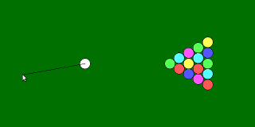
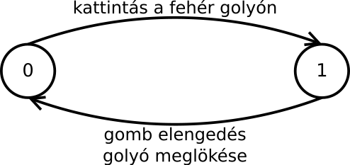
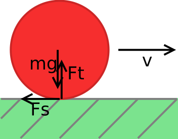
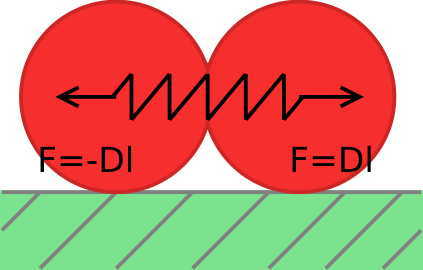
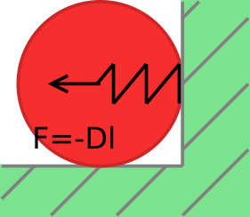

Adventi naptár
Fizikai motor – biliárd
Írjunk programot, amely biliárdgolyók mozgását szimulálja! Legyen a pályán 15 színes golyó, és egy 16-odik fehér, amelyet az egérrel meg lehet lökni. A lökés erejét és irányát egy kattintás után az egér elmozdítása határozza meg; a lökés az egérgomb elengedésekor történjen.
1A felhasználói felület
A program grafikai része az SDL-lel és az SDL_gfx-szel végtelenül egyszerű. Van ezekben
ugyanis egy filledCircleRGBA() nevű függvény, amely egy kiszínezett
kört rajzol. Ez jó lesz golyónak a felülnézetben mutatott asztalhoz.
Az egér koordinátáit és az egérgombokat le tudjuk kérdezni az SDL_MOUSEMOTION,
illetve SDL_MOUSEBUTTONDOWN és UP események adatain keresztül. Az egérkattintást
egy apró állapotgéppel kell kezelni, amelynek két állapota lehet: nincs „megfogva” a fehér
golyó, vagy meg van fogva. Ha a kattintás a fehér golyón történik, akkor megfogjuk, amúgy
pedig nem történik semmi. Ha a gomb elengedése úgy történt, hogy előtte történt megfogás
is, akkor pedig a fehér golyó sebességet kap:

2A fizikai motor
Az előző napi játékokban a mozgás nem épült fizikai törvényekre; egyszerűen úgy lett meghatározva az elemek (fák stb.) mozgása a képernyőn, hogy az nagyjából úgy nézzen ki, ahogyan azt a való világból megszoktuk. Izgalmasabb és valószerűbb játékokat tudunk úgy csinálni, ha a valódi fizikai törvényeket használva számoljuk ki a játék szereplőinek mozgását. Ennek előnye egyébként az is, hogy általában néhány egyszerű fizikai törvényt kell a programban megvalósítanunk, és azokból a megszokott, természetes mozgások automatikusan kiadódnak.
Minden golyónak van egy helyzete a képernyőn és egy sebessége. A helyzetük megváltozása az időben a sebességüktől függ. A sebességük megváltozása pedig a gyorsulásoktól. Gyorsulás a rájuk ható erő hatására keletkezhet: például ha egy golyó nekinyomódik a falnak, akkor a fal kifejt egy rá merőleges erőt, amely hatására a golyó visszafordul.
A golyók adatai a lentiek. (A golyókra ható erők változói is a struktúrában vannak. Ez tervezési szempontból nem helyes, hiszen ez nem a golyók tulajdonsága, hanem a körülményekből adódik, de így egyszerűbb a kód.)
typedef struct Golyo {
double x, y; /* helyzet */
double vx, vy; /* sebesség */
double fx, fy; /* erő */
int c; /* szín */
} Golyo;
Ha ismerjük a golyóra ható F erőt, abból a gyorsulás számítható Newton II.
törvénye, az F=ma alapján. A sebességet elvileg a gyorsulás integrálásával,
a helyzetet pedig a sebesség integrálásával tudjuk meghatározni. Ez azonban nem ilyen
egyszerű – ha egy kicsit is elmozdul egy golyó, akkor megváltoznak rögtön
a rá ható erők. Az integrált emiatt csak közelítőleg tudjuk kiszámolni. Ha feltesszük,
hogy egy rövid delta_t időtartamon belül az erők állandók maradnak,
akkor az integrálokat szorzással közelíthetjük (ez Euler módszere):
Golyo g; g.x += g.vx*delta_t; g.y += g.vy*delta_t; g.vx += (g.fx/m)*delta_t; /* ax*delta_t */ g.vy += (g.fy/m)*delta_t; /* ay*delta_t */
Minél kisebbre választjuk a delta_t értéket, annál pontosabb
lesz a számítás. Az integrál értékére Euler módszere egy viszonylag rossz becslést
ad. Első körben azonban ez jó lesz. Már csak az erőket kell meghatároznunk.
3A golyókra ható erők
A golyókra a következő erők hatnak:
- Ha a golyó falnak ütközik, akkor a fal eltaszítja magától.
- Ha két golyó egymásnak ütközik, akkor azok is taszítják egymást.
- Ha egy golyó gurul, akkor súrlódási erő hat rá. Ez az az erő, amitől végül a golyók megállnak.
A súrlódási erő
A súrlódás egy gördülési ellenállás. Ennek nagysága attól függ, hogy milyen erősen nyomódik a golyó az asztalhoz. Az pedig attól, hogy mekkora a súlya: Fs = µ·Ft = µ·mg. Az iránya pedig mindig a sebességgel ellentétes. A hozzá tartozó vízszintes (x) és függőleges (y) komponenseket ezért úgy tudjuk meghatározni, ha a sebességvektort normalizáljuk (vagyis elosztjuk a saját hosszával), mivel akkor kapunk egy olyan vektort, amely iránya megegyezik a sebességvektorral, a hosszúsága pedig pontosan egy. Ezt az egységvektort kell komponensenként megszorozni a kapott súrlódási erővel, és persze negatív irányban tekinteni. A zárójelben lévő vx/v és vy/v kifejezések adják az egységvektor komponenseit:
v=sqrt(vx*vx+vy*vy); fx-=mu*g*m*(vx/v); fy-=mu*g*m*(vy/v);
A golyók ütközése
Amíg két golyó távol van egymástól, addig nem hatnak egymásra. Azonban ha találkoznak, akkor az összeütközéskor erők lépnek fel. Ilyenkor benyomódnak egy kicsit, még ha nagyon kemények is. Az összepréselődés hatására egy rugalmas erő lép fel. Ezt modellezhetjük úgy, hogy a két golyó közé egy nagyon erős rugót képzelünk.
A rugó erejét Hooke törvényéből, az F=-Dl képletből számíthatjuk ki, ahol l a rugó összenyomódása. A két golyó érintkezésekor, amikor a középpontjuk távolsága r1+r2, ez éppen nulla; ha ennél közelebb kerülnek egymáshoz, akkor kezd el nőni. Az erő irányát a két golyó középpontját összekötő egyenes határozza meg. Itt a számítást az előzőhöz hasonlóan végezhetjük: a két középpont távolságát, mint vektort normalizáljuk. Ebből kapunk egy egységvektort, amely éppen a megfelelő irányú. Ezt kell megszorozni az erővel:
/* golyók távolsága */
dx=x1-x2;
dy=y1-y2;
tav=sqrt(dx*dx+dy*dy);
/* rugóerő */
if (tav<2*golyo_r) {
l=2*golyo_r-tav;
f=golyo_d*l;
fx+=dx/tav*f; /* egységvektor*f */
fy+=dy/tav*f;
}
Golyó és fal ütközése
Ez hasonlóan képzelhető el, mint két golyó ütközése. Minél jobban belenyomódik egy golyó a falba (vagyis minél közelebb van a középpontja a falhoz a sugarához képest), annál nagyobb erő hat rá. Ezt mind a négy falra külön ki kell számítani. A négy fal négy különböző irányú erőt adhat.
Ebben az esetben nincsen szükség arra, hogy normalizáljuk a vektort, hiszen pl. a bal és a jobb oldalni falnál függőleges, y irányú erő nem lép fel. Csak a vízszintes, x irányú erővel kell foglalkozni, amely az x irányú benyomódásból adódik. A bal oldali falat tekintve:
if (x<golyo_r)
fx+=golyo_d * (golyo_r-x);
4A program
A program letölthető innen: advent16-biliard.c. Ebben az egyes konstansokat (rugók ereje, nehézségi gyorsulás, golyók tömege) próbálgatással állítottam be, hogy viszonylag jól nézzen ki az eredmény.
A programnak két gyengesége van. Egyik az, hogy nem számolja a golyók perdületét. Azaz a golyók mindenhova forgás nélkül mozognak. Ez azt is jelenti, hogy nem lehet megcsavarni őket.
A másik probléma drámaibb ennél. Az integrál közelítésére alkalmazott Euler-féle módszer
ugyanis nem túl pontos, sőt az ismert módszerek közül a legkevésbé pontos. Ha nem szeretnénk,
hogy a golyók a képernyőn egymásba olvadjanak (és ez egyébként kihasson a szimuláció pontosságára
is), akkor kellően nagyra kell állítani a képzeletbeli rugók erejét meghatározó D rugóállandót
(a kódban golyo_d). Ilyenkor azonban nagy erők adódnak, amelyek a helytől erősen
függenek, és nem jogos az a közelítés, hogy a delta_t időintervallumon belül az
erők, így a gyorsulás állandó. Ha egymás felé tart két golyó, még akár az is előfordulhat, hogy a
delta_t időn belül visszafordulnak az ütközés hatására.
Emiatt ha túl nagy erővel lökjük meg a fehér golyót, akkor a szimuláció elszállhat (egyre
gyorsul az összes golyó, és végül eltűnnek a képernyőről). A probléma orvoslására csökkenthetjük
a delta_t időintervallumot, de jobb ötlet lenne egy másik integrálközelítő módszer
használata. Általában a Runge-Kutta módszert szokták alkalmazni. Erről bővebben
itt lehet olvasni (példa kóddal): Integration Basics.